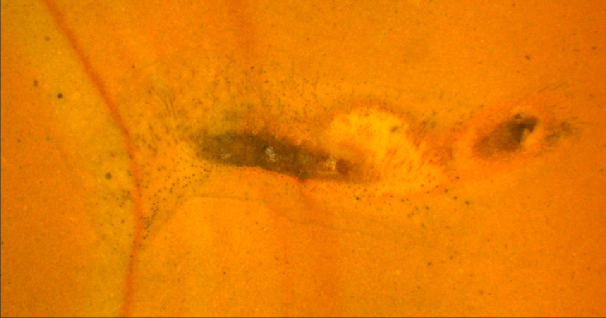
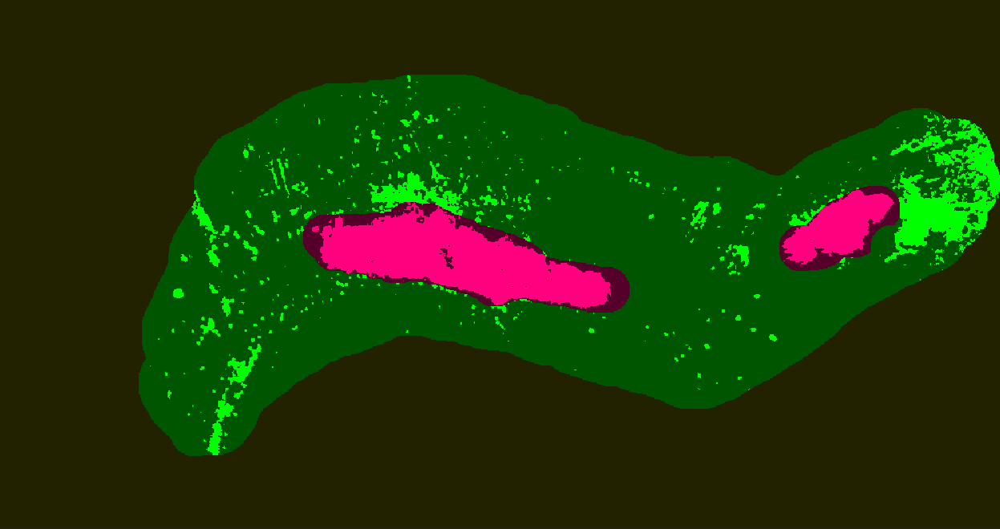
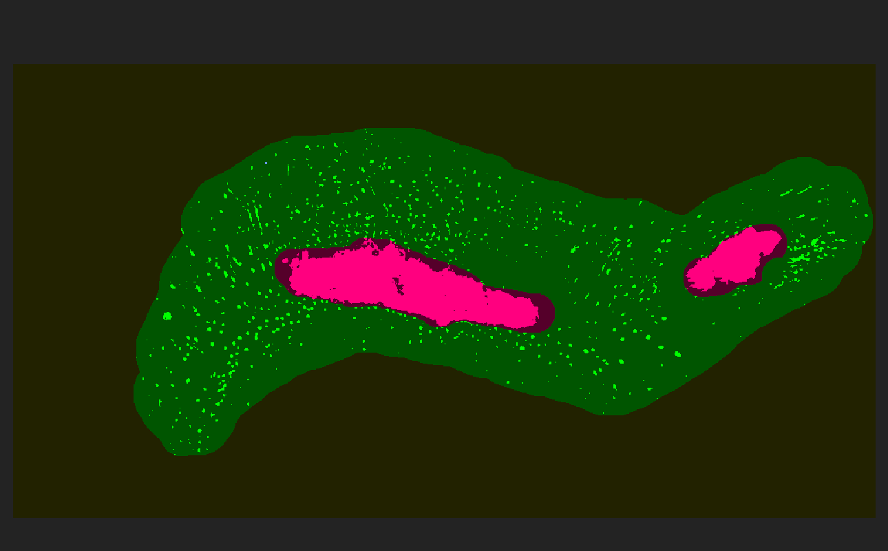

LCE generation is a generation mode that applies an enhancement filter
to data - unlike other modes, it does not replace existing working data,
but applies a filter to modify it. The LCE filter is designed to pick out
structures that are consistently brighter or darker than their local surroundings,
but are not consistently brighter or darker than any threshold level over larger areas.
Figure LCE1 shows an example of one such dataset (the dark specks represent spines).
For each pixel, the LCE algorithm computes a mean value for all pixels in the
existing working dataset, within a certain radius. The value of the central pixel is then
shifted away from that mean, so darker pixels (relative to their local region) are made darker, and lighter
pixels are made lighter. This has the effect of enhancing contrast without globally
lightening or darkening entire regions. Figure LCE2 shows the results of linear generation, which fails to discriminate many spines. Figure LCE3 shows the results of applying LCE after linear generation within this mask.
As LCE generation does not replace but augments existing data, neither ‘invert’ nor ‘auto’
mode are supported (the check-boxes do not appear). When determining optimal settings for
LCE through experimentation, users should apply them to a slice using the Generate button
then use Undo to remove them and tweak parameters.
LCE can be applied using the Generate button to an entire slice (or to sub-regions of a slice using
locking or by hiding masks that you do not want affected). Alternatively it can be ‘brushed on’
using the Recalc brush. Note that as the effect works with and modifies existing data, brushing
over a region should be done with a single brush stroke, to avoid applying the effect twice.

Figure LCE1. A slice from a dataset amenable to processing with LCE. The dark ‘spots’ away from the main fossil are spines.¶

Figure LCE2. The data from Figure LCE1, with linear generation applies to the green mask (with optimal settings). Note that few spines have been picked out; without LCE, this image would require extensive editing to recover these structures.¶

Figure LCE3. The data from Figure LCE2, with an LCE generation applied to the green mask subsequent to the linear generation. Note that many more spines are visible, and that the red curved stripe on the left has been suppressed.¶
The Generation Panel in LCE mode provides three settings. These are Boost (the strength of the LCE effect), Radius (the
radius of the averaging, see above), and Adjust. Adjust is a post-LCE global brightness adjustment.
Use Boost to control the strength of the LCE modification to the data. Use the Radius setting to control the degree of ‘localness’ of the LCE algorithm. High values may be more appropriate for data with low frequency noise, and higher values for data with only high frequency noise. High radius values will slow the HCE algorithm - we recommend values in the 3-30 range for most datasets. Adjust is used to compensate for the tendency of the LCE algorithm to globally brighten or darken working data, which occurs because the mean values around which it adjusts contrast are normally consistently brighter or darker than the threshold level used by SPIERS. For example, if set to 0, no adjustment takes place. If set to -50, all pixels are reduced in brightness by 50 after LCE is applied.